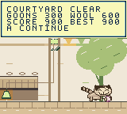
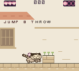
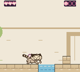
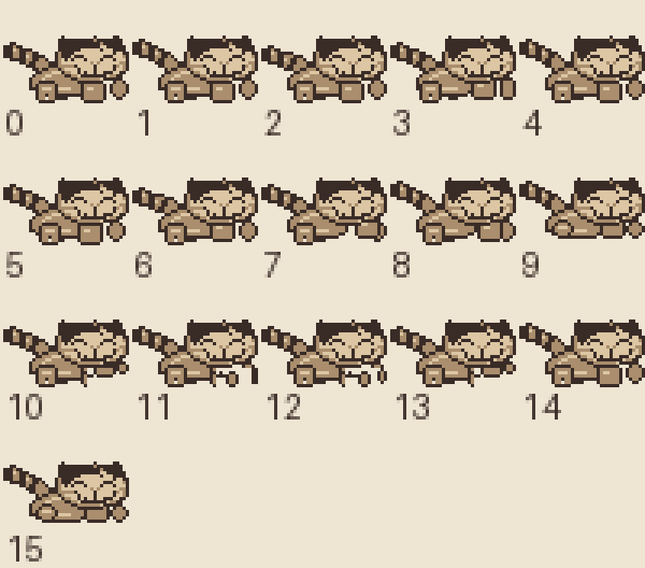
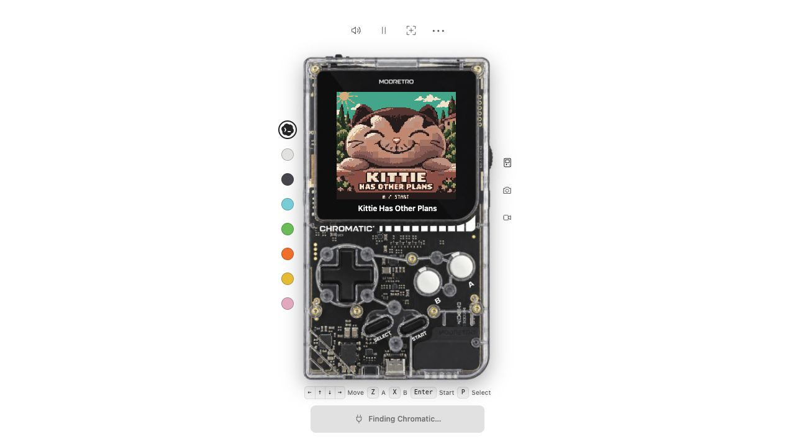

Courtyard pilot
Ready for human play. The published v1.0.0 remains available unchanged.
The courtyard now rewards bringing wool home. The final table has a patrol above the low bell, Kittie has clearer short legs, and the irrigation channels ripple.
Scoring
| Completed attempt | Points |
|---|---|
| Each defeated goon | 100 |
| Each ball carried through the exit | 200 |
The score stays at the top during courtyard play and shows earned goon points. Completing the stage adds the retained-wool bonus. The result shows both contributions and your courtyard best. Retrying discards the current attempt. A lower completed score keeps the existing best. Scoring is limited to the courtyard for this pilot.

The last table offers a choice: throw beneath the patrol to ring the bell, or aim a jumping shot at the goon for another 100 points. The bell’s rebound leaves wool within reach. Lost wool remains lost until you retry the stage.
Score and sprite refinement

The independent character critic read the original Kittie reference folder, inspected owner photographs and compared the revised source and native frames. The final walking, back-carry and cuddle samples passed. Read the visual review and reference comparisons.
A little more life

The table sentry reacts to the bell while keeping his patrol speed. Kittie reacts to a successful hit and cuddles retained wool at completion. His face embroidery, back carry and idle cuddle remain intact.

Try it
Open the current local browser preview or use the native pilot cartridge. The preview address is temporary. The cartridge is the durable local build.
A jumps, B throws, Up+B lobs. Hold A for a higher jump. Start retries the whole stage and Select returns to the cover. On the cover, A or Start opens the stage selector and B closes it.
Latest verification
The revised score HUD was observed at 000, 100, 200, 300 and 900, and is absent on the cover and grove. Native checks sampled 3,936 frames without exceeding nine objects on a scanline. The final cartridge imported genuine 600-point saves from both prior pilot cartridge variants, imported published-v1 unlocks, and retained a new 900-point best through a cold restart. Focused verification report.
The earlier completed 600-point browser session remains open in its original tab. The new preview is separate; cartridge save compatibility does not establish automatic browser-session transfer.
Earlier gameplay review
The independent critic played the full courtyard, requested a correction to the low bell’s wool recovery, and passed the corrected room. The final cartridge imports published-v1 stage unlocks, reaches 900 with all three wool and hearts, and preserves that best through a true cold restart. Both native and official web cartridges completed the 900-point route.
The earlier candidate passed lower-score, retry, death and later-stage save checks. Those results are retained as supporting evidence: the final revision changes only the bell’s position and picture, with scoring and save code unchanged. Art review checked the original character references and native poses. This pilot has not received a new physical Chromatic test.
Approved direction and recommendations · Original-reference sprite critique · Gameplay critique · Art review · Scoring and save verification · Published version guide
Browser handoff
